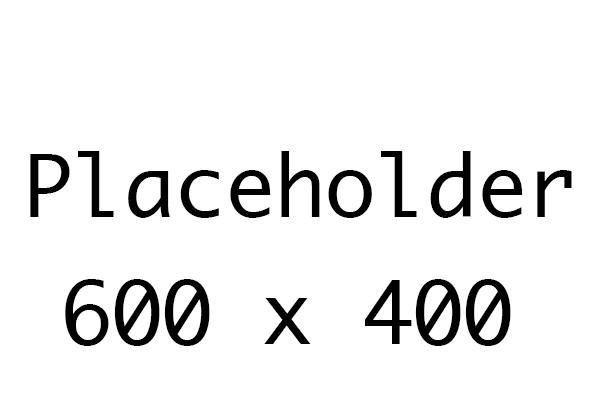

Section 6 of 9
Next Section →
Video Tutorials
━━━━━━━━━━━━━━━━━━━━Section 6 Videos
Watch: "Prey AI - Flee Behavior in Godot"
Section 6: Prey AI (Flee)
Create animals that run away from the player, with support for multiple animal models in a single scene.
Section Progress: 0%
1
Creating a Prey Animal
We'll create a single scene that can be used for any prey animal (rabbits, deer, squirrels, etc.).
- Press Ctrl + N to create a new scene
- Add a CharacterBody3D as the root node
- Rename it to "Prey"
- Save the scene as "prey.tscn"
Setting Up the Node Structure
- Add a child node: Node3D
- Rename it to "ModelContainer"
- This node will hold the 3D model
- Add a CollisionShape3D as a child of Prey
- Set the shape to CapsuleShape3D
- Set the height to 1.0 and radius to 0.5
💡 Why a ModelContainer? This makes it easy to swap different animal models without affecting the collision or behavior logic.

Figure 6.1: Creating the Prey scene with CharacterBody3D and ModelContainer
2
Getting Animal Models
You'll need 3D animal models for your prey. Here are some options:
- Kenney Animal Pack: https://kenney.nl/assets/animal-pack
- KayKit Animals: https://kaylousberg.com/game-assets
- Itch.io Free 3D Animals: Search for "animals"
Importing Models
- Download your chosen animal models (.glb or .gltf)
- Create a folder: assets/animals/
- Drag the model files into this folder
- Name them clearly: rabbit.glb, deer.glb, etc.
💡 Pro Tip: If you don't have animal models yet, you can use primitive shapes (BoxMesh, CapsuleMesh) as placeholders. The script will work the same way!
Figure 6.2: Animal models imported into the assets/animals/ folder
3
Flee Script with Multiple Models
Add this script to the Prey node. It includes support for selecting different animal models in the Inspector.
extends CharacterBody3D
@export var speed = 4.0
@export var detection_range = 8.0
@export var flee_distance = 15.0
@export var animal_type: String = "rabbit"
@onready var model_container = $ModelContainer
var target: Node3D
var flee_direction: Vector3
var is_fleeing = false
var wander_direction: Vector3
var wander_timer = 0.0
func _ready():
load_model()
target = get_tree().current_scene.get_node("Player")
if target == null:
print("Prey: No player found!")
randomize_wander()
func load_model():
# Clear existing model
for child in model_container.get_children():
child.queue_free()
# Load the appropriate model based on animal_type
var model_path = ""
match animal_type:
"rabbit":
model_path = "res://assets/animals/rabbit.glb"
"deer":
model_path = "res://assets/animals/deer.glb"
"squirrel":
model_path = "res://assets/animals/squirrel.glb"
"fox":
model_path = "res://assets/animals/fox.glb"
_:
model_path = "res://assets/animals/default.glb"
# Instantiate and add the model
if ResourceLoader.exists(model_path):
var model = load(model_path).instantiate()
model_container.add_child(model)
else:
print("Model not found: ", model_path)
func _physics_process(delta):
if target == null:
return
var distance_to_player = global_position.distance_to(target.global_position)
if distance_to_player < detection_range:
is_fleeing = true
flee_direction = (global_position - target.global_position).normalized()
velocity = flee_direction * speed
if distance_to_player > flee_distance:
is_fleeing = false
randomize_wander()
else:
is_fleeing = false
wander(delta)
if velocity.length() > 0.1:
var target_rotation = atan2(velocity.x, velocity.z)
rotation.y = lerp(rotation.y, target_rotation, 0.1)
move_and_slide()
func wander(delta):
wander_timer += delta
if wander_timer > 2.0 + randf() * 3.0:
randomize_wander()
wander_timer = 0.0
velocity = wander_direction * speed * 0.5
func randomize_wander():
wander_direction = Vector3(randf_range(-1, 1), 0, randf_range(-1, 1)).normalized()Understanding the Model Selection Code
- @export var animal_type - Dropdown in Inspector to choose which animal
- load_model() - Loads the selected model when the scene starts
- match - A switch statement that picks the correct model path
- model_container - The Node3D that holds the model
- queue_free() - Removes the old model before loading a new one
💡 New Concept:
match is a powerful conditional statement in GDScript. It's like a switch statement and is perfect for selecting between multiple options.
Figure 6.3: The flee script with built-in model selection
4
Populating the World
- Open your Environment.tscn scene
- In the FileSystem dock, find prey.tscn
- Drag it into the viewport multiple times
- For each instance, select it and go to the Inspector
- Find the animal_type property
- Choose a different animal for each instance
Example Placement
- Rabbit 1: animal_type = "rabbit", speed = 4.0, detection_range = 8.0
- Rabbit 2: animal_type = "rabbit", speed = 3.5, detection_range = 10.0
- Deer 1: animal_type = "deer", speed = 5.0, detection_range = 12.0
- Squirrel 1: animal_type = "squirrel", speed = 6.0, detection_range = 6.0
⚠️ Important: Place prey animals on top of the ground (y = 0.5 for a 1-tall capsule) or they will fall through the world!
Figure 6.4: Placing multiple prey animals with different types in the environment
5
Using Area3D for Detection
Instead of calculating distance in the script, you can use an Area3D node for detection. This is more efficient with many animals.
- Select the Prey node
- Add a child node: Area3D
- Rename it to "DetectionArea"
- Add a CollisionShape3D as a child
- Set the shape to SphereShape3D with radius 8.0
Then modify the script:
# Add these variables
var player_in_range = false
func _ready():
load_model()
target = get_tree().current_scene.get_node("Player")
$DetectionArea.body_entered.connect(_on_detection_area_body_entered)
$DetectionArea.body_exited.connect(_on_detection_area_body_exited)
randomize_wander()
func _on_detection_area_body_entered(body):
if body.name == "Player":
player_in_range = true
func _on_detection_area_body_exited(body):
if body.name == "Player":
player_in_range = false
# Replace the distance check in _physics_process with:
if player_in_range:
is_fleeing = true
flee_direction = (global_position - target.global_position).normalized()
velocity = flee_direction * speed
else:
# Wander...
💡 Pro Tip: Using Area3D is more efficient than checking distance every frame, especially with many animals in the scene.
Figure 6.5: Adding an Area3D for player detection
6
Testing Your Prey Animals
- Press F5 to run the game
- Walk toward each type of prey animal
- Each animal should flee away from you
- Different animals should have different models
- If you stop chasing, the animal should wander again
Troubleshooting Common Issues
- Prey doesn't move: Check that speed is set and the script is attached
- Prey falls through ground: Add a CollisionShape3D to the Prey node
- Prey ignores player: Check that detection_range is large enough
- Model doesn't appear: Check that the model path in the script matches your file location
- All animals look the same: Verify each instance has a different animal_type selected
💡 Congratulations! You now have multiple types of prey animals that flee from the player! In the next section, you'll add predators that chase the player.
Figure 6.6: Testing multiple prey types with different models and behaviors